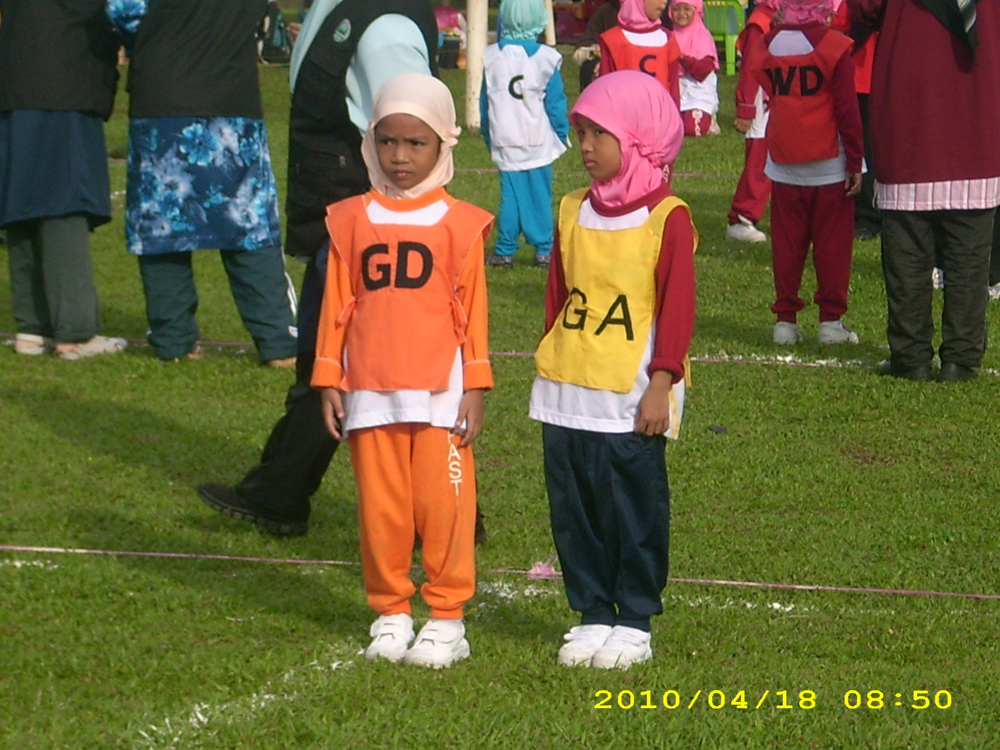
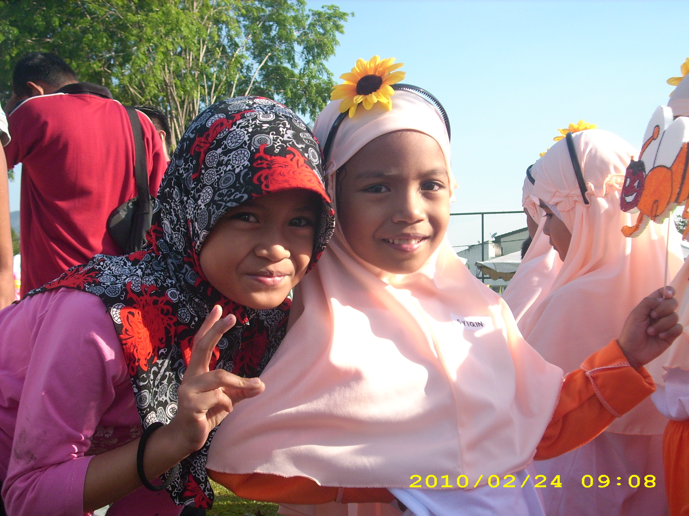
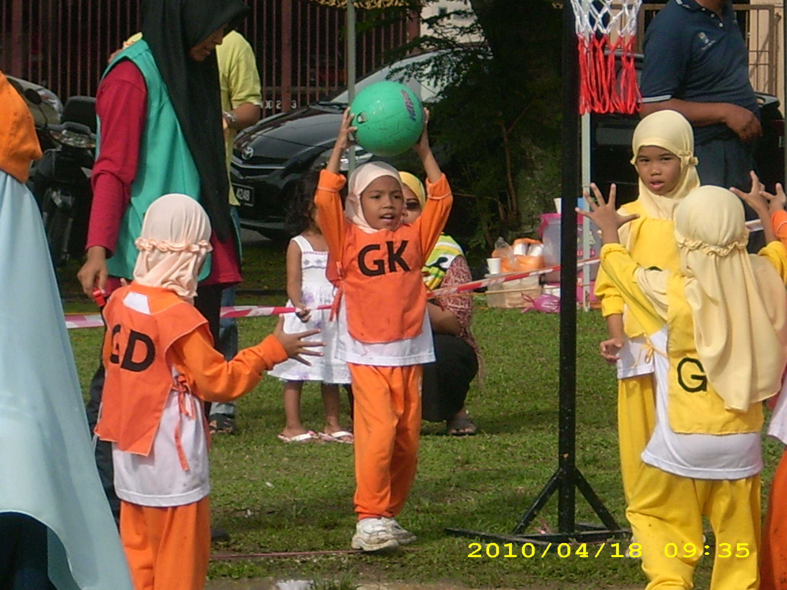
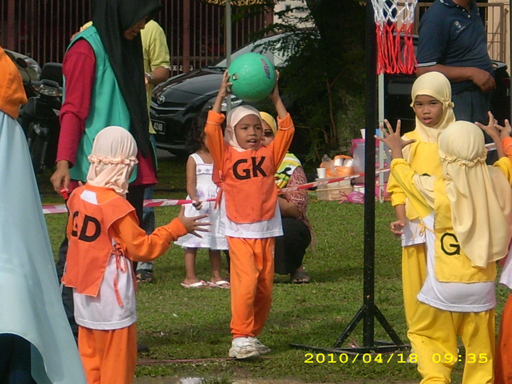

I attended Pasti Ilmi in Selayang, where I had a vibrant and memorable childhood. I was very active in sports, especially netball and running, and I enjoyed the sense of camaraderie and competition that came with it. I remember the excitement of participating in various school events, but one of the highlights was definitely the field day competition between all the Pasti branches in Selangor. I felt a great sense of pride when I won 3rd place in netball. That victory was not just about the award, but also about the teamwork, effort, and the fun we had. My academic life was just as fulfilling. I was consistently one of the top students in my class, and I always enjoyed challenging myself to do my best. Outside of academics and sports, my friends and I shared many fun moments together. I remember the van rides to and from school, which were a staple of our daily routine. The van was our main mode of transportation, and it was always filled with laughter, chatter, and the occasional mischief. Those rides were a time to bond with my friends and reflect on the day’s activities.

One of the subjects I loved most was Bahasa Melayu. I found the language fascinating, but I did have my challenges, especially with pronunciation. I recall one funny moment when I mispronounced the word “terowong” as “teworong.” I was so embarrassed at the time, but looking back, it was one of those lighthearted moments that made my childhood so special. Despite the struggles with pronunciation, I always appreciated the encouragement from my teachers, especially Teacher Zue. She was my favorite teacher, and I remember how she always made learning fun and engaging. Teacher Zue was more than just an educator—she was a mentor who believed in me, and her positive influence stayed with me long after I left Pasti. In fact, I’m still in touch with her and the other teachers to this day, grateful for the guidance they provided. What made my time at Pasti even more meaningful was that all of my siblings attended the same kindergarten, so we shared those early experiences together. It created a strong sense of family and connection, and those memories have stayed with me throughout my life.
 
